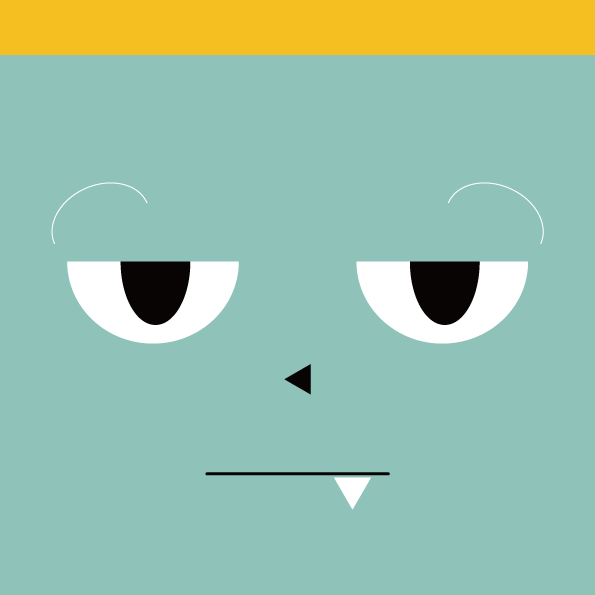

2021.09.08(수) ~ 09.12(일)
5일간
콩이와 룡이와 함께 울산에서 즐거운 시간을 보내보세요!
1억 년 전 울산은 대형 육식공룡에서부터 소형 초식공룡들까지 다양한 공룡들이 사는 집단 서식지였습니다.
대곡천 일대에서 발견된 발자국이 울산이 공룡의 생활공간이었음을 알려줍니다.
일부는 발가락 모양을 계측할 수 있고, 발자국 깊이가 깊고 윤곽이 뚜렷해 자연사적 가치가 높습니다.
울산은 문화재로 지정된 천전리,유곡동,대곡리 공룡 발자국 화석 외에도
울산에는 현재까지 다양한 공룡 발자국이 발견되고 있습니다.
-울산 공룡축제를 알리는 새로운 울산의 대표 캐릭터
-과거 울산에 살았던 초식.육식 공룡을 모티브로 캐릭터화
- 두 아기 공룡 캐릭터들을 활용한 상품화+홍보에 용이
-어린 아이부터 어른까지 사랑받는 캐릭터 디자인
울산 유곡동에 사는 룡이는 까칠하지만 다정한 육식 공룡입니다.
조용하고 도도한 룡이는 책을 읽거나 무엇인가를 만드는 것을 좋아합니다.울산 천전리에 사는 콩이는 귀여운 초식 공룡입니다.
호기심과 탐구심이 많은 콩이는 산책을 하거나 나가 뛰어노는걸 좋아합니다.
다른 아기 공룡 친구들을 좋아해서 쫓아 다니기도 한답니다.
다른 흥미로운 것이 있으면 갑자기 어디론가 사라져 버리기도 하니 놀라지 마세요!
호기심이 많아 사고도 많이 치지만 사랑스러운 아기 공룡입니다.